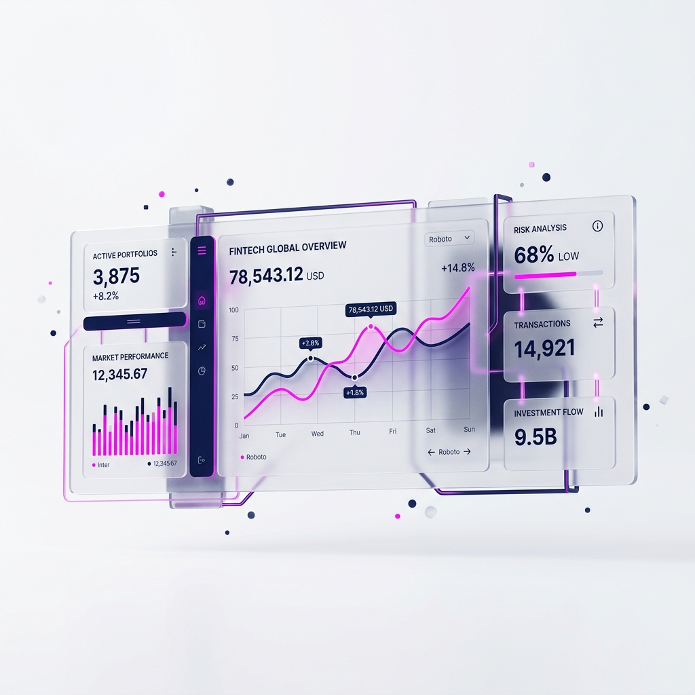

La vostra casella di posta aziendale vi sta mentendo. Appare come un formidabile mezzo di comunicazione, ma in realtà è una trappola nera dove si riversano decisioni critiche frammentate, approvazioni perdute e responsabilità inesistenti. Quando la produzione o i servizi B2B dipendono dal "ti ho scritto ieri", l'azienda sta perdendo marginalità lavorando nel caos.
I sintomi della tossicità digitale
Le aziende in fase di rincorsa tecnologica tendono ad aggiungere software su software per curare l'assenza di un protocollo di base. Vengono introdotti Asana, poi Trello, poi Notion e alla fine... si finisce per messaggiarsi compulsivamente su WhatsApp o Microsoft Teams per capire dove diavolo si trovi il documento definitivo del Cliente X.
Questo fenomeno viene chiamato Rumore Informativo. Non è una sfumatura fastidiosa: è un buco nero per il bilancio aziendale perché annulla la tracciabilità delle operazioni. Riconoscete questi scenari?
- Ore perse ogni settimana per ricostruire uno storico: "Chi aveva approvato quello sconto?"
- Iniziative bloccate perché il file era in allegato a una mail finita nello spam o letta distrattamente.
- Collaboratori che non sanno mai quale versione di un progetto debbano aprire ("Logo_Definitivo_3_Finale.pdf").
"L'email non è uno strumento di project management. È un veicolo. Quando tentate di gestire la cronologia di produzione via posta, state trasportando sabbia con un setaccio."
L'era della "Single Source of Truth"
Sintelops non vende un proprio software proprietario, né siamo venditori di licenze per gonfiare le vostre spese IT. Noi analizziamo l'ecosistema frammentato della vostra infrastruttura e costringiamo due (massimo tre) macro-piattaforme a parlarsi rigidamente. Il concetto è uno solo: se l'informazione non è nella piattaforma centrale, allora l'informazione *non esiste*.
Disegniamo meccanismi di automazione. Quando un cliente firma un deal su un CRM (es. Salesforce), il sistema "inietta" direttamente un ticket non-manipolabile nel board tecnico della Produzione (es. Jira o Asana). Zero email scambiate, zero incomprensioni sui documenti allegati, perfetta cronologia di responsabilità (Audit log).
Il traguardo è consegnare al CEO e al Board una dashboard asettica, silenziossisima, dove con tre click e colpo d'occhio si ottiene lo status radiografico delle marginalità, senza inviare l'ennesima email di follow-up al Manager di reparto.
📖 Questo articolo fa parte del nostro cluster sulla ristrutturazione operativa — la guida completa su come eliminare i colli di bottiglia e scalare senza perdere il controllo.